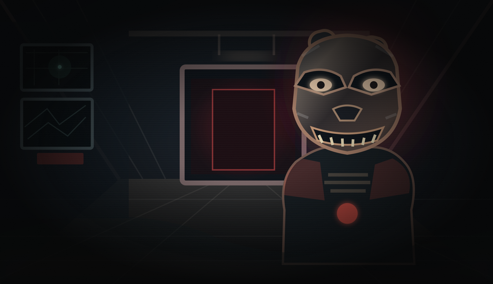

FIVE NIGHTS
AT MANOLO'S
Bienvenido a la colección Five Nights at Manolo's. Descubre todas sus entregas y descarga cada edición desde su plataforma correspondiente.
LOS JUEGOS
Arte conceptual creado para esta web. Las entregas sin release aparecen como no publicadas, sin mezclar archivos ni versiones.
LA PRIMERA
NOCHE EMPIEZA AQUÍ
Five Nights at Manolo's 1 ya cuenta con cuatro ediciones publicadas en GitHub. Elige tu dispositivo y descarga exactamente la que necesitas.
DESCARGAS / FNAM 1
Todos los botones enlazan directamente a los archivos originales de las releases de Five Nights at Manolo's 1.
Los archivos se distribuyen desde GitHub Releases. Las entregas FNAM 2, 3, 4, Manolo's Location, Pizzeria Simulator y UCN todavía no tienen archivos públicos. La descarga de un archivo IPA no garantiza que pueda instalarse directamente en cualquier iPhone.
ERIC HERTER
GAMES ENTERTAINMENT
Five Nights at Manolo's es un proyecto creativo fan-made, con una colección organizada por entregas y versiones. Esta página reúne el catálogo y sus descargas en un único lugar.
Proyecto no oficial, sin afiliación con Scott Cawthon ni con los responsables de Five Nights at Freddy's. Los derechos de personajes, nombres y elementos originales pertenecen a sus titulares.
LOS JUGADORESExplorar el repositorio →